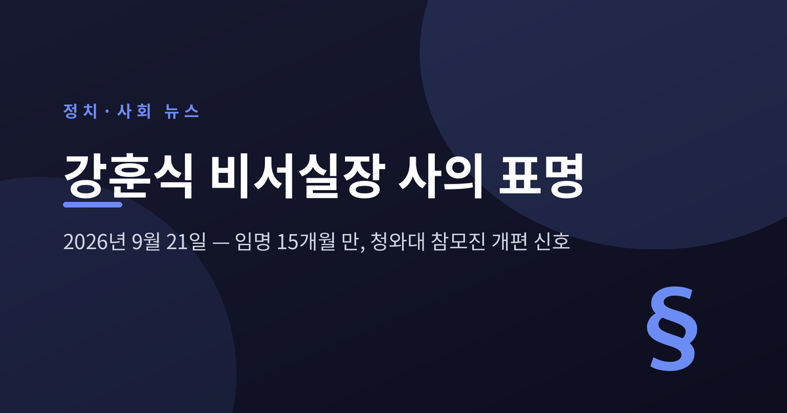
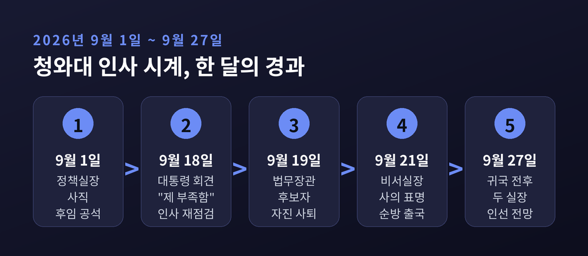
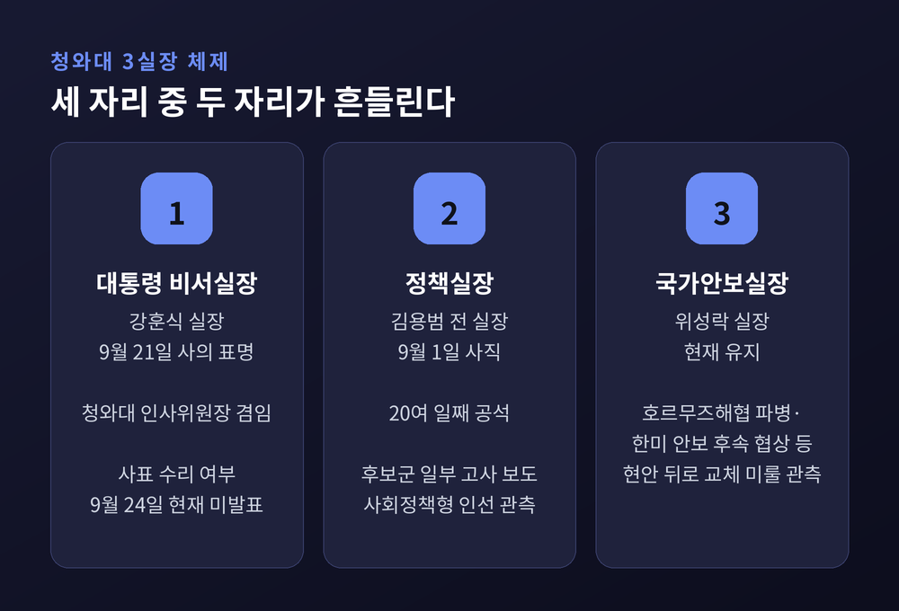
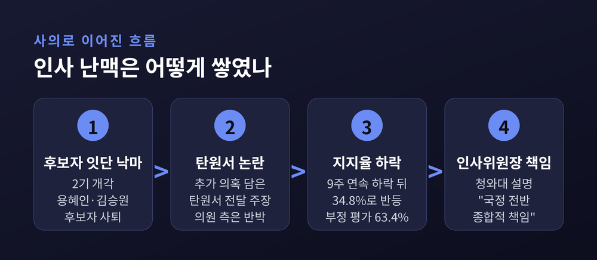
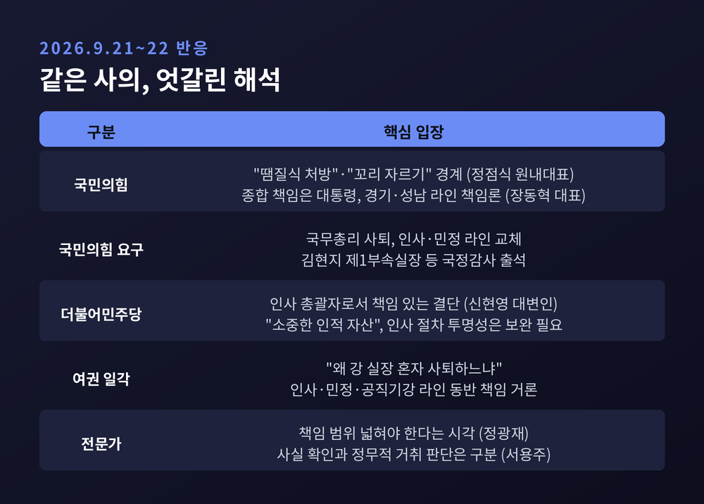
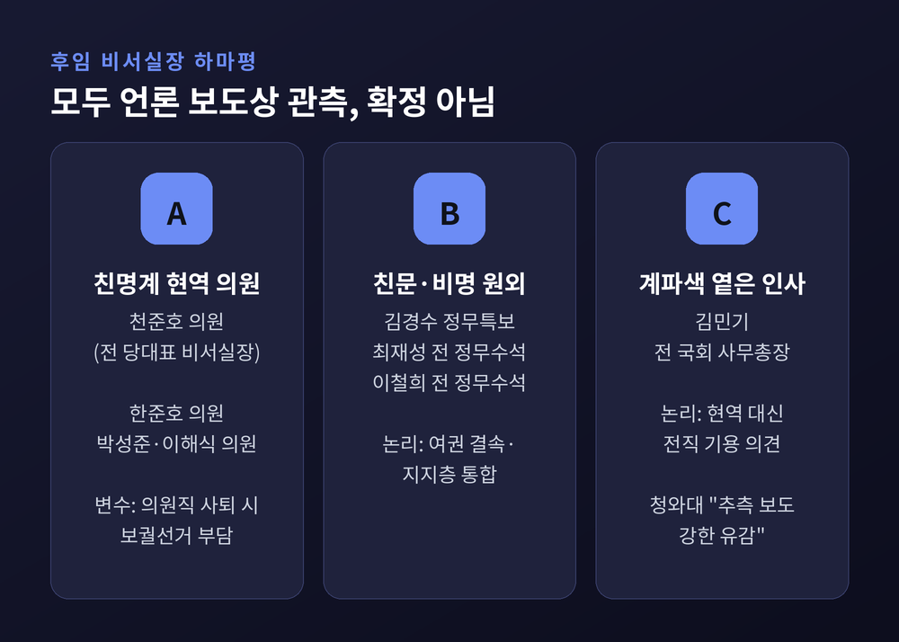
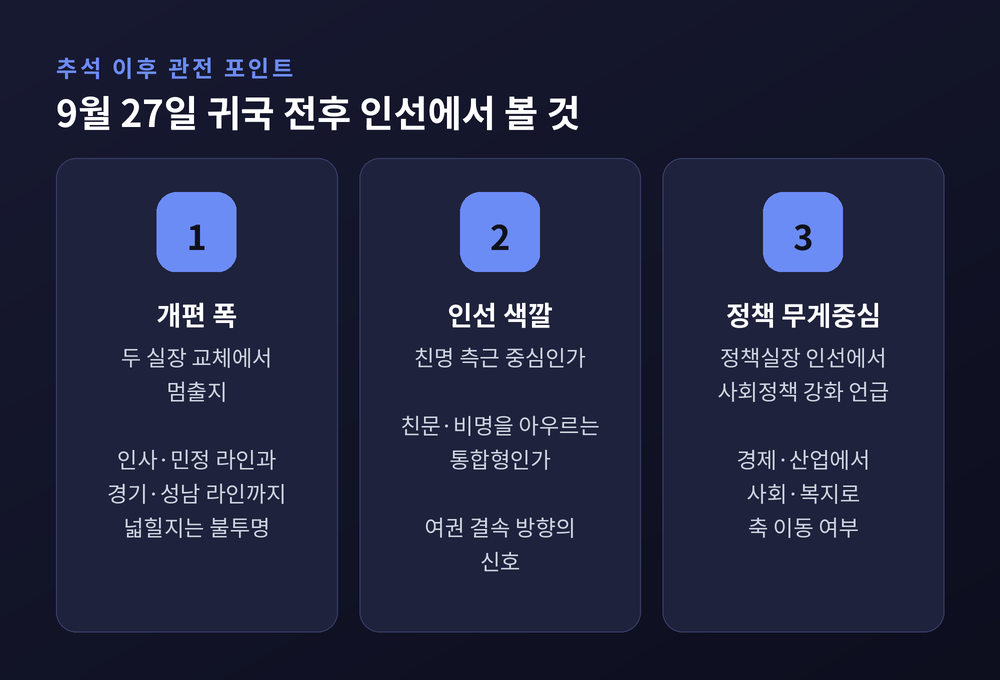

이번 글에서는 9월 21일 강훈식 대통령 비서실장의 사의 표명을 정리해 보겠습니다. 무슨 일이 있었는지, 왜 지금이었는지, 그리고 추석 연휴 뒤 인선이 어떻게 흘러갈지까지 차례로 짚어 봅니다. 확인된 사실과 정치권의 관측은 구분해서 적겠습니다.
세 줄 요약
발표는 갑작스러웠습니다.
9월 21일, 성기홍 청와대 홍보소통수석이 예정에 없던 브리핑을 열었습니다. 강훈식 비서실장이 그날 오전 이 대통령에게 사의를 표했다는 내용이었습니다.
청와대 관계자는 배경으로 사흘 전 기자회견을 꼽았습니다. 대통령이 9월 18일 회견에서 국정을 바라보는 국민의 시선을 두고 여러 차례 "자신의 부족함" 탓이라고 말했습니다. 그렇다면 대통령을 보좌하는 비서실장으로서 종합적인 책임을 지겠다는 취지라는 설명입니다.
대통령의 반응도 같은 날 나왔습니다. 오후 수석보좌관회의에서 이 대통령은 비서실장이 "드디어 졸업을 한번 해 보시겠다고 하신 것 같다"고 말했습니다. 이어 수리 여부는 "아직 결정을 못 하겠다"고 했습니다. 참모들이 이른 새벽 출근과 긴 격무로 건강까지 힘들었다며 노고를 격려하기도 했습니다.
그리고 대통령은 그날 곧바로 출국했습니다. 뉴욕 유엔총회 참석과 멕시코 국빈 방문을 잇는 9월 21일부터 27일까지의 일정입니다.

비서실장은 대통령의 '제1비서'로 불립니다. 비서실 전체를 이끌고, 강 실장의 경우 장관급 인사를 총괄하는 청와대 인사위원장도 겸했습니다.
문제는 시점입니다. 김용범 전 정책실장은 이미 9월 1일 사직했습니다. 후임은 아직 정해지지 않았습니다. 한국경제는 유력하게 검토되던 후보들이 자리를 고사해 구인난에 빠졌다고 전했습니다.
여기에 비서실장까지 물러나면 비서실장·정책실장·국가안보실장, 이른바 3실장 가운데 위성락 안보실장만 남게 됩니다. 청와대 운영의 두 축이 동시에 비는 셈입니다.
한 달 전만 해도 세 실장이 모두 자리를 지키고 있었습니다. 지금은 체제 자체를 새로 짜야 하는 국면입니다.

청와대의 공식 설명은 '국정 전반에 대한 종합 책임'입니다. 다만 언론 다수는 누적된 인사 검증 실패를 직접적인 배경으로 봤습니다.
2기 개각에서 용혜인 성평등가족부 장관 후보자와 김승원 법무부 장관 후보자가 잇달아 낙마했습니다. 김 후보자는 9월 19일 자진 사퇴했습니다. 식약처 로비 의혹에 성추행 의혹까지 더해지며 비판이 여권 전체로 번졌다는 평가가 나왔습니다. 1기 때도 강선우·이혜훈 후보자가 낙마한 전례가 있습니다.
사퇴 뒤에도 논란은 이어졌습니다. 김 후보자의 전 보좌관이 추가 의혹을 담은 탄원서를 9월 17일 텔레그램으로 청와대 쪽에 보냈다고 주장했습니다. 서울신문은 이 탄원서 소식이 알려지면서 대통령 회견의 쇄신 메시지가 무색해졌다는 평가가 나왔다고 짚었습니다. 인사위원장인 강 실장이 결심한 계기로 보는 분석입니다. 한편 김승원 의원 측은 탄원서 소문이 "사실과 다르거나 과장·오류가 있다"고 반박했습니다.
지지율 흐름도 배경입니다. 이투데이에 따르면 국정수행 지지율은 7월 중순 이후 9주 연속 하락했습니다. 9월 21일 발표된 조사에서는 34.8%로 전주보다 1.0%포인트 올라 하락세가 멈췄지만, 부정 평가는 63.4%였습니다.
디지털타임스는 정책 혼선의 책임은 정책실장이, 인사 참사의 책임은 비서실장이 지는 모양새라고 해석했습니다. 동시에 "사의 표명은 책임일 뿐 쇄신이나 대책은 아니다"라는 한계도 함께 지적했습니다.

같은 사의를 두고 여야의 해석은 크게 달랐습니다.
국민의힘은 "땜질식 처방"이라고 규정했습니다. 장동혁 대표는 페이스북에 비서실장 교체로 해결될 수준은 이미 넘어섰다며, 종합적인 책임을 질 사람은 대통령이라고 적었습니다. 정점식 원내대표는 강 실장 사퇴는 당연한 수순이라면서도 '꼬리 자르기'가 돼서는 안 된다고 했습니다. 한성숙 국무총리 사퇴, 인사·민정 라인 교체, 그리고 김현지 제1부속실장 등 이른바 '경기·성남 라인'의 국정감사 출석도 요구했습니다.
더불어민주당은 책임 있는 결단으로 받아들였습니다. 신현영 대변인은 라디오에서 인사를 총괄하는 비서실장으로서 큰 책임을 지고 사의를 밝힌 것이라고 평가했습니다. 강 실장을 당의 "소중한 인적 자산"이라 부르며 더 큰 역할을 기대한다고도 했습니다. 다만 국민적 의구심이 있다면 인사·민정 라인의 절차를 더 투명하게 관리해야 한다는 입장도 덧붙였습니다.
여권 내부에서도 결이 다른 목소리가 있습니다. 경향신문이 전한 한 여권 관계자는 왜 강 실장 혼자 물러나느냐며 인사·민정·공직기강 라인의 동반 책임을 거론했습니다.
전문가 시각도 갈렸습니다. 정광재 동연정치연구소장은 인사 논란의 책임 범위를 넓혀야 한다고 봤습니다. 서용주 맥정치사회연구소장은 김현지 실장의 실제 관여 여부부터 사실로 확인해야 하며, 사실에 따른 책임과 정무적 거취 판단은 구분해야 한다고 했습니다. 참고로 김 실장의 인사 개입설은 야권이 제기한 의혹으로, 확인된 사실은 아닙니다. 당사자 측은 부인하고 있습니다.

아래 이름들은 모두 언론 보도에 나온 관측입니다. 청와대가 확인한 인선은 아직 없습니다.
첫째는 친명계 현역 의원군입니다. 가장 자주 거론되는 인물은 천준호 의원입니다. 재선(서울 강북갑)으로 원내운영수석부대표를 맡고 있고, 2022년 이 대통령의 당대표 시절 비서실장을 지냈습니다. 2022년 인천 계양을 보궐선거 당시 수행실장이었던 한준호 의원, 박성준·이해식 의원도 이름이 오릅니다.
둘째는 탕평형 카드입니다. 여권 내부 갈등이 지지율 하락으로 이어진 만큼 친문·비명계를 발탁해 지지층을 묶어야 한다는 관측입니다. 김경수 청와대 정무특보, 최재성·이철희 전 정무수석이 거론됩니다. 경향신문은 이 대목에서 대통령이 출국 전 문재인 전 대통령과 통화해 국정 현안을 논의한 사실을 함께 전했습니다. 계파색이 옅은 김민기 전 국회 사무총장 이름도 나왔습니다.
변수도 있습니다. 현역 의원이 비서실장이 되면 의원직을 내려놓아야 합니다. 보궐선거 부담 때문에 전직 인사를 찾자는 의견이 많다는 여권 관계자 발언이 보도됐습니다. 한편 청와대는 정치권의 '파워게임' 관측 보도에 대해 "악의적 추측성 보도"라며 강한 유감을 표했습니다.

9월 24일 현재 사표 수리 여부는 공식 발표되지 않았습니다. 다만 여권 안팎에선 대통령이 국정 분위기 쇄신 차원에서 사의를 받아들일 가능성이 높다는 전망이 많습니다.
한국일보는 청와대 관계자를 인용해 대통령이 순방에서 돌아올 때쯤 비서실장·정책실장 인선을 함께 발표할 것이라고 전했습니다. 공석인 국토교통·디지털소통비서관 임명과 비서관급 이동도 같이 이뤄질 수 있다고 했습니다. 추석 연휴(9월 24~26일)가 끝나고 대통령이 귀국하는 27일 전후가 첫 분기점입니다.
지켜볼 대목은 세 가지로 추릴 수 있습니다.
안보실장 교체는 호르무즈해협 파병과 한미 안보 후속 협상 등 현안을 마무리한 뒤로 미뤄질 가능성이 크다는 관측입니다. 법무부 장관 후임 인선도 함께 남은 숙제입니다. 야당은 다가오는 국정감사에서 인사 책임론을 이어 갈 태세입니다.

정리하면 이렇습니다.
강 실장의 사의는 한 사람의 퇴장이라기보다, 출범 15개월을 맞은 청와대가 체제를 다시 짜겠다는 신호에 가깝습니다. 다만 사의만으로 신뢰가 돌아오지는 않습니다. 야당의 지적처럼, 그리고 여권 일각의 목소리처럼, 결국 평가는 누구를 어떤 원칙으로 세우느냐에 달려 있습니다.
"책임은 사람이 지지만, 신뢰는 시스템이 되찾는다."
이번 개편이 그 시스템을 바꾸는 계기가 되겠느냐고 물으신다면, 27일 이후 발표될 명단과 그 이유를 보고 나서 답하는 것이 맞다고 생각합니다.